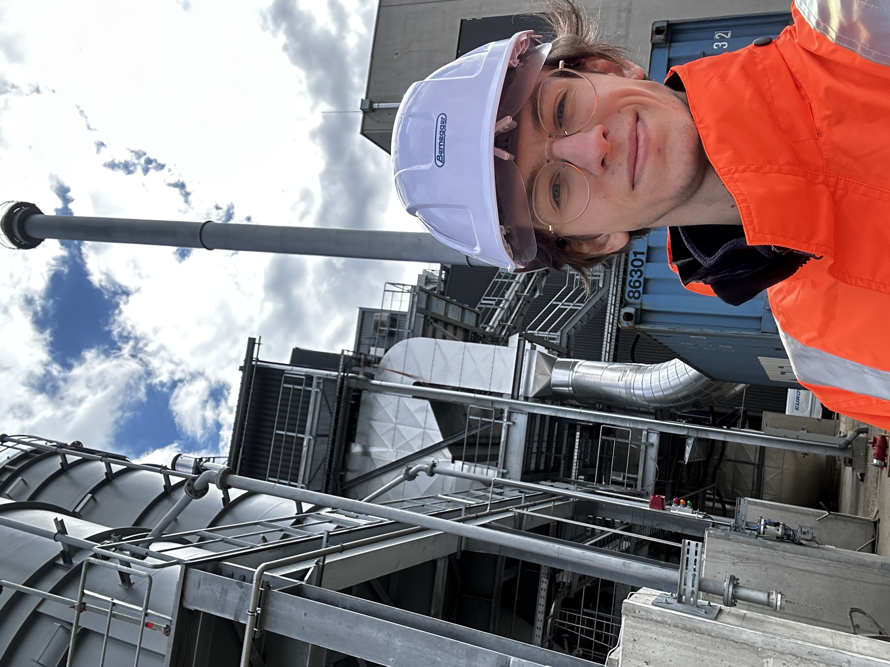
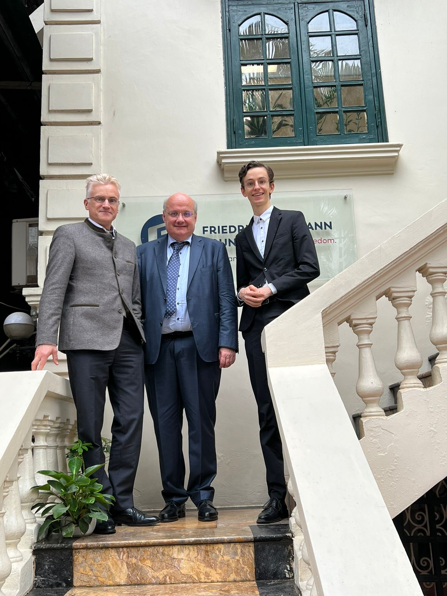
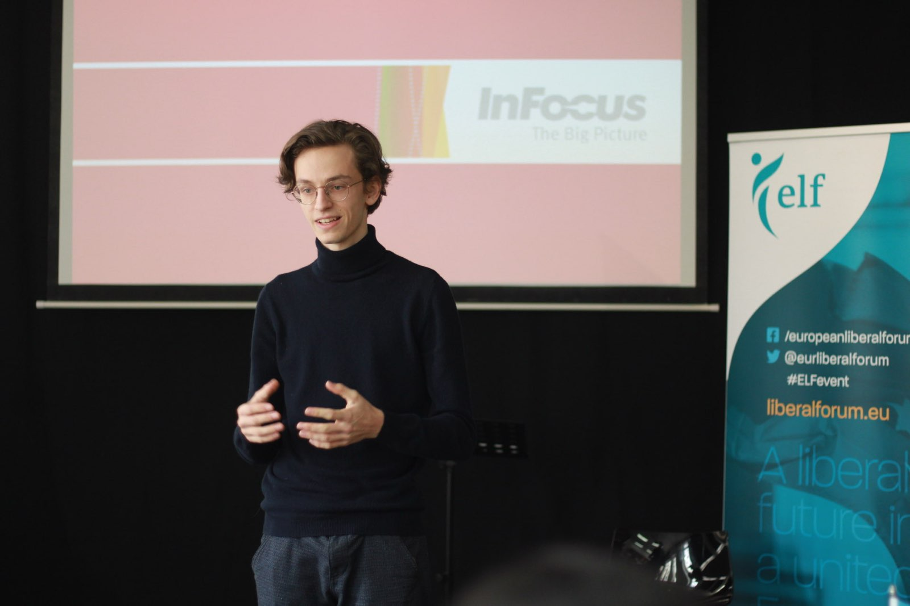
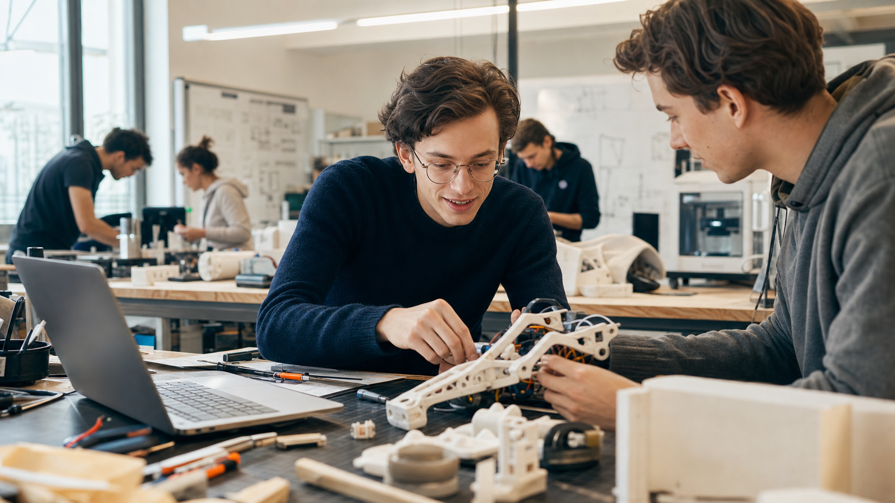

Tech
A quadruped built from scratch, controlled by a ML model evaluating EMG data from a novel wristband.
Personal operating system
Technology, institutions, opportunity, and the people between them.
A quadruped built from scratch, controlled by a ML model evaluating EMG data from a novel wristband.

The engineering behind DACH's hidden champions, from industrial waste recycling to injection moulding machines.
Helping young Austrians to apply to elite international universities.

From Madrid, Brussels and Vienna to Berkeley, Hong Kong and Hanoi.

Founding Junos Schüler_innen, a student organization breaking up the encrusted school representation system.

The next prototype of me with CDTM: trend research, product development, and business strategy.